Tracy Xia
Lightfield Camera
Part 1: Depth Refocusing
The objects that are further from the camera do not change much in their positions while nearby objects vary more significantly in their positions. Thus if we average all images in the grid together we should obtain an image where further objects are focused while nearby objects are blurred.
Average of All Images in the Grid
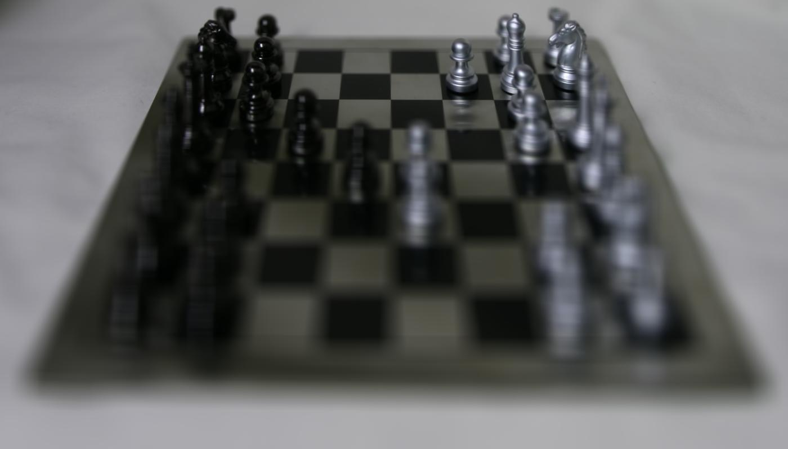By applying an appropriate shift to all the images and then averaging, we can obtain images focused at different depths of the image. We can achieve this affect by shifting each image by the difference between their positions on the grid and the position of the "middle" image, at the 8x8 grid. The position of each image in the grid is given in the filenames of each image, which can be extracted for the calculation. To move the focus, we multiple the shifts by different constants. For example, in the chess image we can increase the constant to move the focus closer to the camera (downards in the images). Increasing the shift will make the image align at different depths, but we have to be selective about the range of constants. If the constant is too small or too large the average image will become blurred.
Chess: Constants 0 to 3
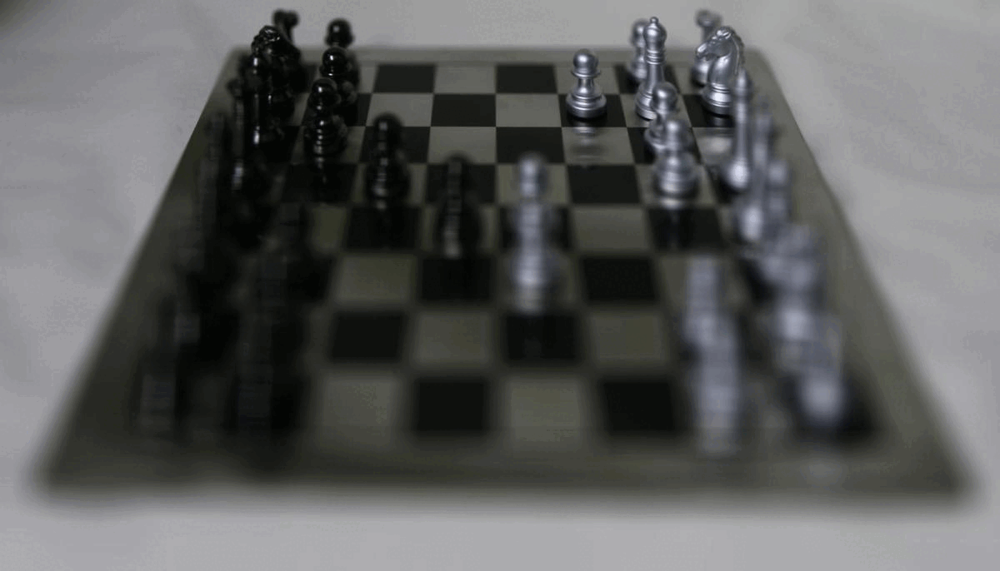Chess: Constant 4
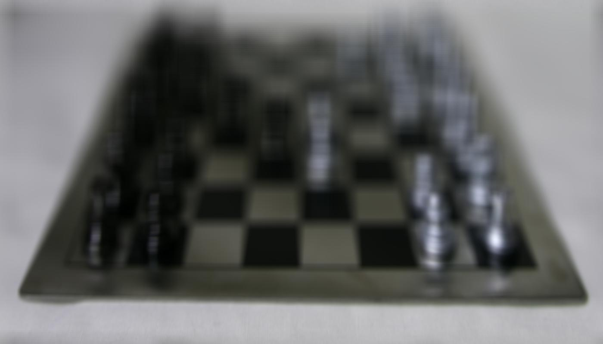When we shift too much the image is blurred
Jellybean: Constants 0 to -5
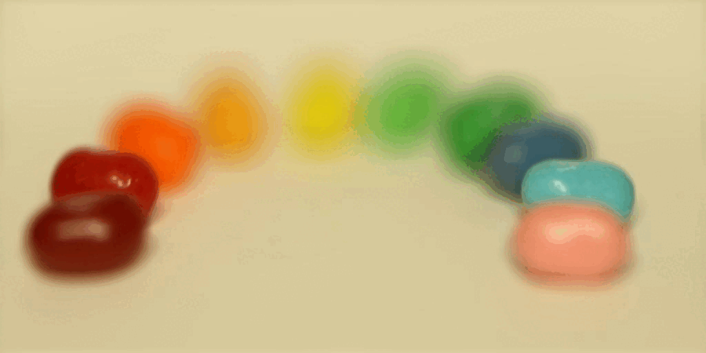For the jellybean images, the focus is actually at the object near the camera when we perform no shifts. The positions of objects further away vary more while the positions of objects near the camera is focused. Thus, I used negative constants to move the depth of focus further away (upwards in the images).
Part 2: Aperture Adjustment
In this part we mimic a camera with a larger aperture by averaging the images in the grid that is perpendicular to the optical axis. Fewer images mimics a smaller aperture while more images mimics a larger image.
Chess: Up to Radius of 7

Jellybean: Up to Radius of 7
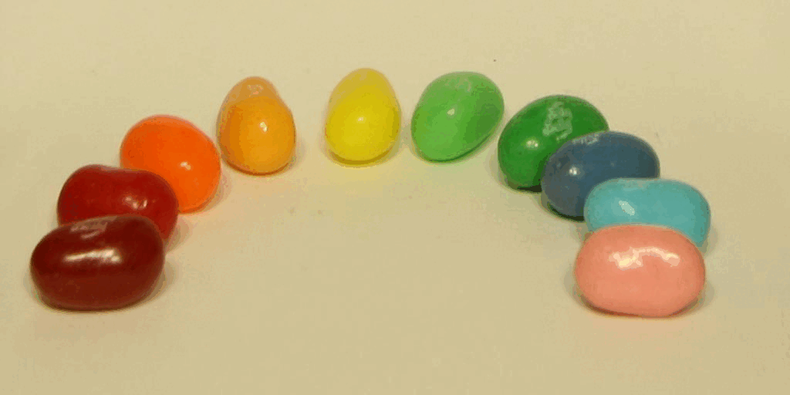Part 3: Summary
From the project I learned that when we have multiple images taken over a regularly spaced grid, we are able to create images focused at different depths. We can do this by shifting the images appropriately. We are also able to mimic different apertures by choosing different numbers of perpendicular images (to the optical axis).
Gradient Domain Fusion
In this project, we aim to seamless blend a part of a source image onto the target image by formulating our objective into a least squares problem and solving that. We use poisson blending, where we are focusing on the gradients of the image and ignoring the overall intensity of our source image.
Part 1: Toy Problem
In the toy problem, we recconstruct the grayscaled image of Woody and Buzz by using all of the x and y gradients and one additional pixel (in the top left corner). We use these as our constraints when solving the least squares problem.
Original Toy Image vs Reconstructed Toy Image

Original
Reconstructed
Part 2: Poisson Blending
First, I aligned my source image to the portion of the target image that I want to blend it onto. Then I select the regions of the source image that I want to blend to create a mask and obtain the pixel coordinates within the mask.
Now for poisson blending, we need to solve the following constraints:
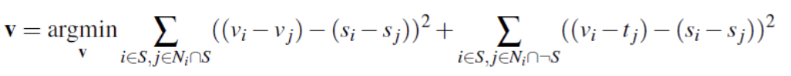This is similar to the toy problem, except we need to account for all four neighbors of each pixel in the mask. While the first part is solved similarly as in the toy problem, we refer to the second part of the equation if a neighbor is not within the mask. In this case we don't need to solve for v_j, so we can take the intensity value directly from the corresponding pixel in the target image. Unlike the toy problem, we do not need the extra constraint of top left pixel intensity here. For all pixels not in the mask, we use the target pixels. After solving for the values of the new image, we paste it into our target image at the correct coordinates.
Penguin Hike
Source: Penguin

Target: Hiking on Snowy Hill

Swimming Polar Bear
Source: Polar Bear
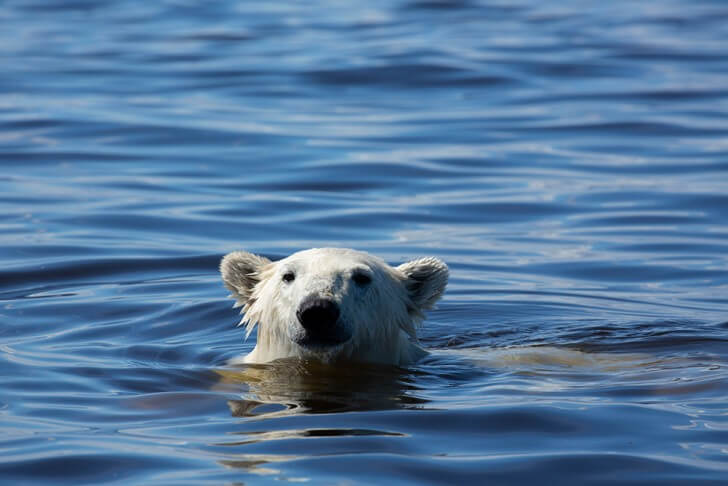Target: Swimming Pool
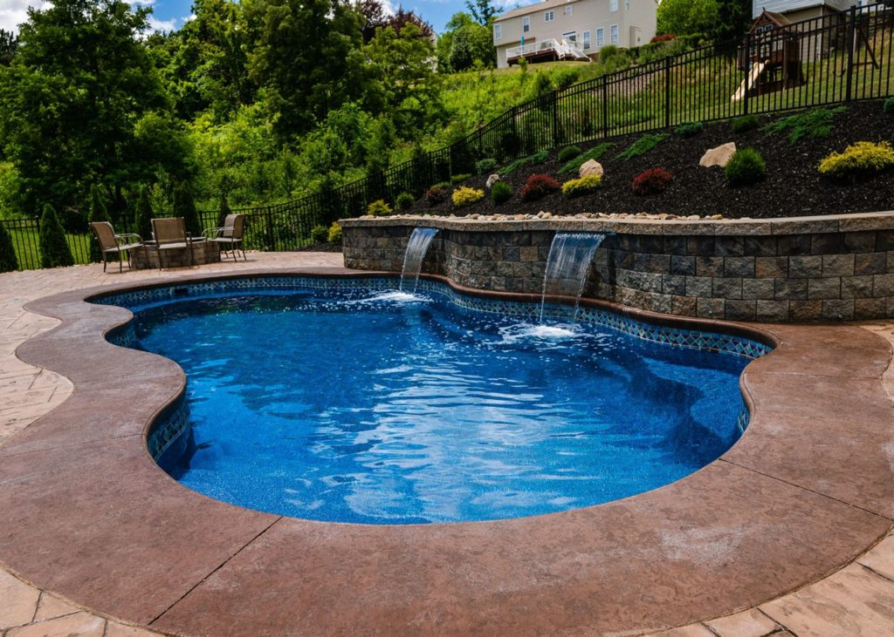
Space Orca
Source: Orca
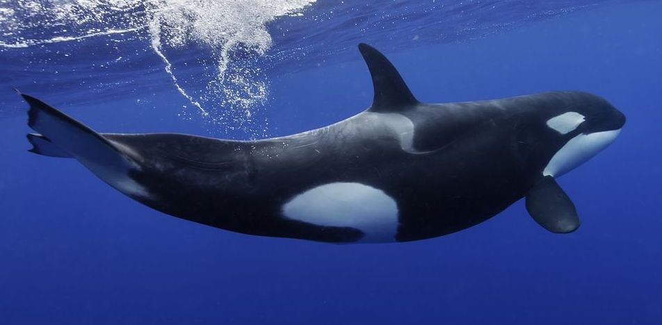Target: Space
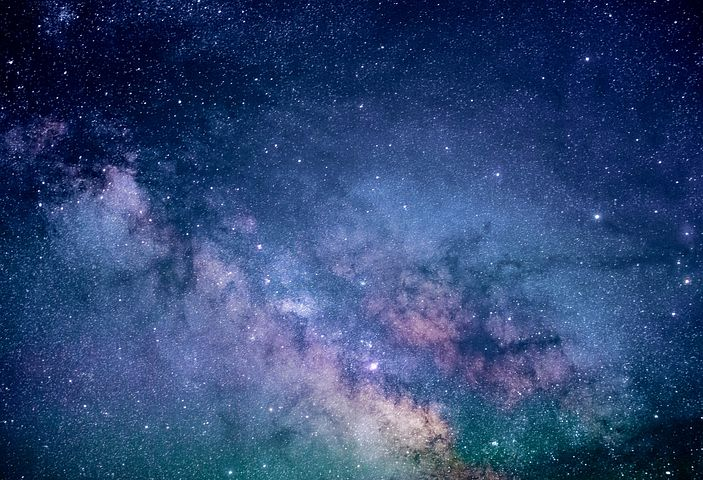
Here are some examples with not as good results
Bells and Whistles: Mixed Gradients
Mixed Gradients is similar to Poisson Blending, except instead of always using the gradients of the source image, we instead use the gradients from either the source of target images with the larger magnitude. This method gives the source image some transparency and does not completely cover the target image at the mask region.
Writing on Brick Wall
Source: Whiteboard Writing
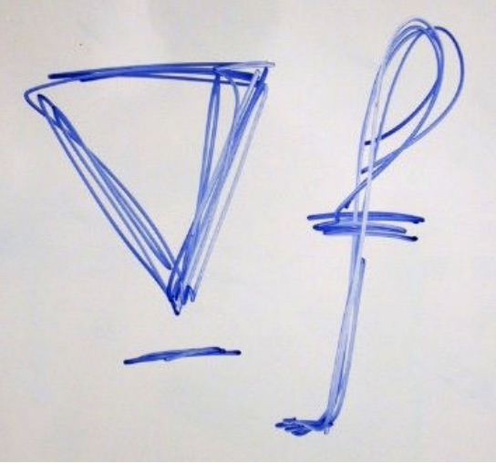Target: Brick Wall
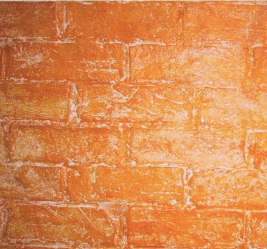
Drawing on Wall
Source: Drawing
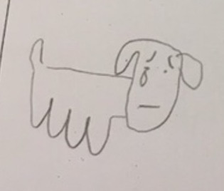Target: Wall

Rainbow Island
Source: Rainbow
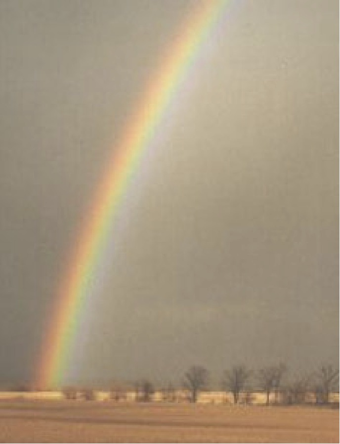Target: Tropical Island
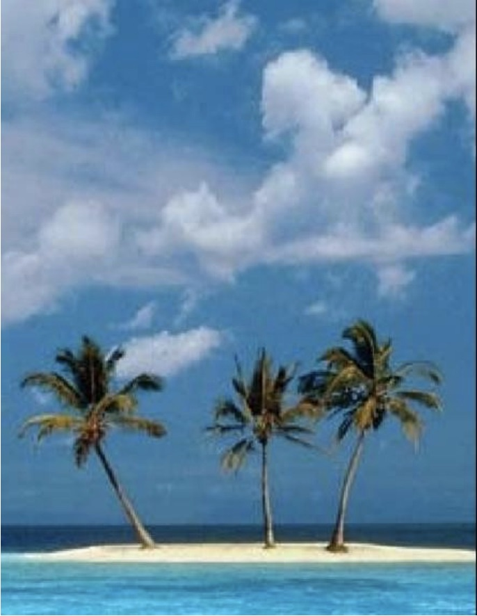